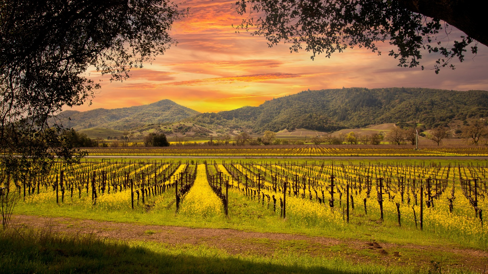
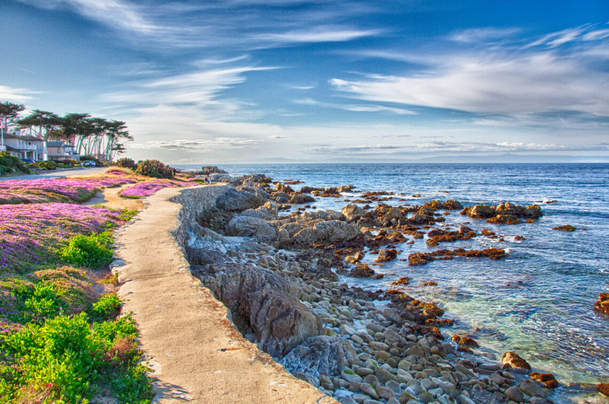
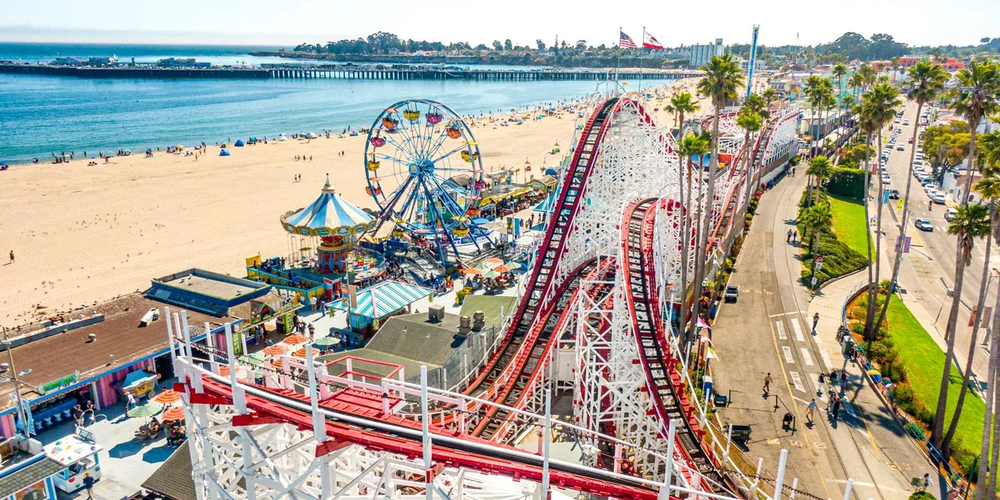
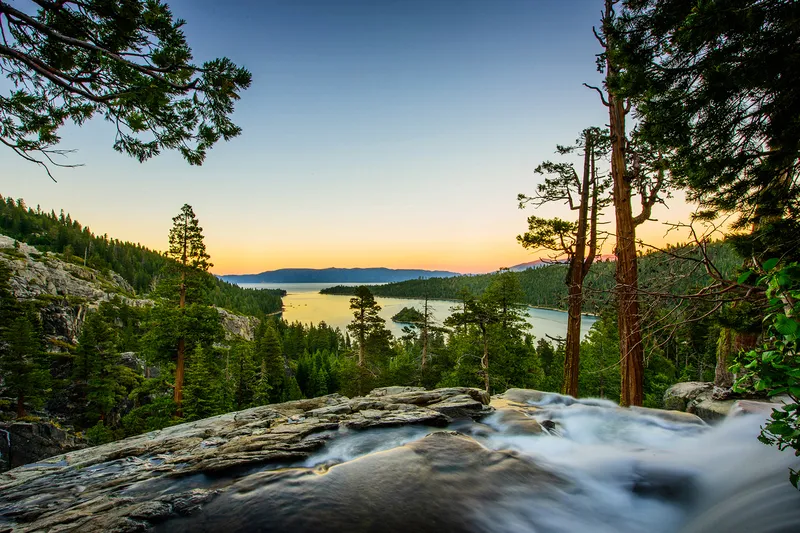

About San Francisco Trips
San Francisco is located near many amazing travel destinations that are perfect for weekend trips. Visitors can explore coastal towns, mountains, and famous wine country without traveling far.
Napa Valley

Napa Valley is about an hour from San Francisco and is known for its vineyards, scenic countryside, and relaxing atmosphere.
Monterey

Monterey is a coastal town known for its ocean views, historic Cannery Row, and the famous Monterey Bay Aquarium.
Santa Cruz

Santa Cruz is a fun beach town known for its boardwalk, surfing, and beautiful coastal scenery.
Lake Tahoe

Lake Tahoe is a popular destination known for its clear blue lake, mountain views, and year-round outdoor recreation.